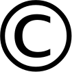
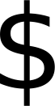

Open source within a year ‐ guaranteed
Sustainable Source is an attempt at combining the best of open source
development and entrepreneurship. It offers freedom to pursue development
that its contributors believe in and the ease of mind that they can
sustain their lives while doing so. When a sustainable source project
releases a new version, it comes with the guarantee that a year later that
same release can be used under the terms of the permissive MIT license,
making it fully free and open source. Releases that are less than a year
old can be used when a license fee has been paid.

Supports developers
Any proceeds from license fees are automatically distributed among the
developers. Those who contributed the most to the sustainable source
project receive the largest share. This allows contributors to sustain
their lives by developing the software. To ensure that proceeds are
distributed fairly, a smart contract is employed to handle payments. A
smart contract is a piece of code on a blockchain that is guaranteed to be
executed as written. No cheating is allowed, or even possible.

How does it work?
Paying a license fee is a very similar experience to doing any other payment
online. What happens directly afterwards is very different though. The
payments will be kept by a smart contract that will distribute the proceeds
fairly among the contributors. To claim their share of the proceeds,
contributors can register their contributions in the form of accepted Github
pull requests. More registered pull requests means a larger share of the
proceeds. Like in most open source projects, anyone is allowed and even
encouraged to suggest improvements by submitting pull requests.